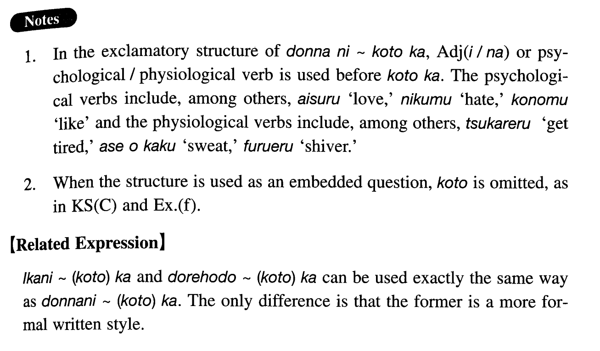

←
DoJG
→
どんなに~（こと）か
(I. 39)
Example sentences
(ksa).
兄は病気が治って
どんなに
嬉しかった
ことか
。
How glad my elder brother was when he recovered from his illness!
(ksb).
父は母を
どんなに
愛していた
ことか
。
How dearly my father loved my mother!
(ksc).
日本へ行くまで日本が
どんなに
狭い
か
分からなかった。
I didn't realise how small Japan was until I got to Japan.
(a).
英夫は由美子に結婚を断られた時に
どんなに
残念に思った
ことか
。
How disappointed Hideo must have felt when Yumiko refused to marry him.
(b).
勉強が嫌いだった良夫には大学に入るのが
どんなに
難しかった
か
。
For Yoshio, who didn't like to study, how hard it was to enter college!
(c).
圭子は
どんなに
フランスに留学したかった
ことか
！
How strongly Keiko wanted to go to France!
(d).
学生達はその厳しい先生を
どんなに
強く憎んだ
ことか
！
How strongly the students hated their strict teacher!
(e).
駅前のアパートは
どんなに
便利だった
ことか
！
How convenient my apartment right in front of the station was!
(f).
一郎は親のもとを離れた時、親が
どんなに
寂しがった
か
分からなかった。
Ichiro didn't realise how lonely his parents must have felt when he left them.
Formation
(i)
どんなに
～
(
こと
)
か
どんなに
難しい
ことか
。
How difficult something is!
(ii)
どんなに
～
か
Predicate
どんなに
面白い
か
知らない。
Someone doesn’t know how interesting something is
